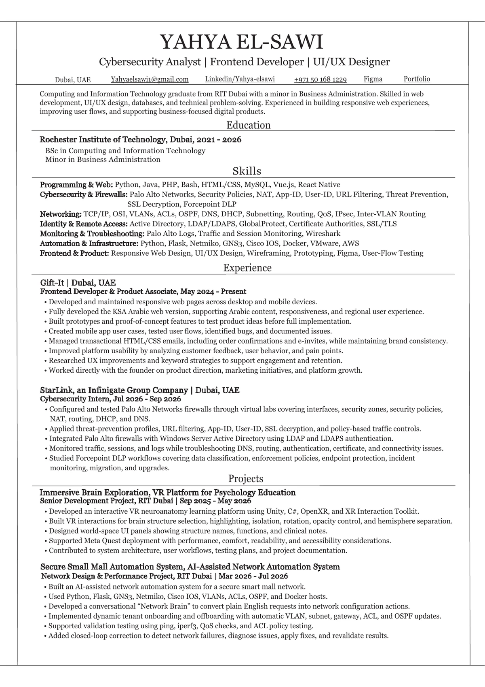
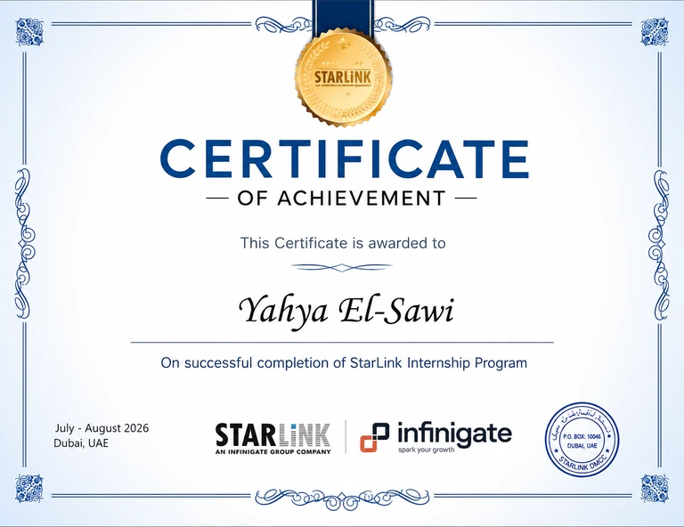
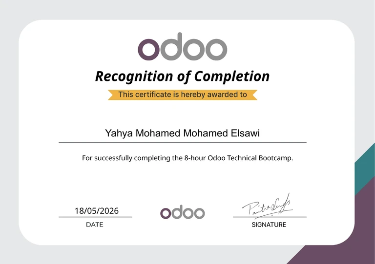
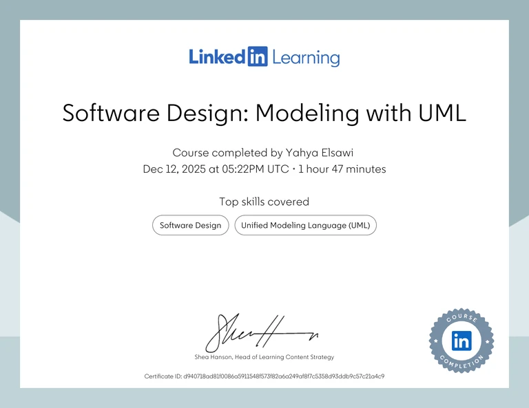
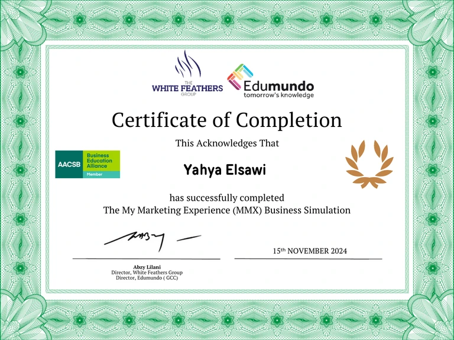
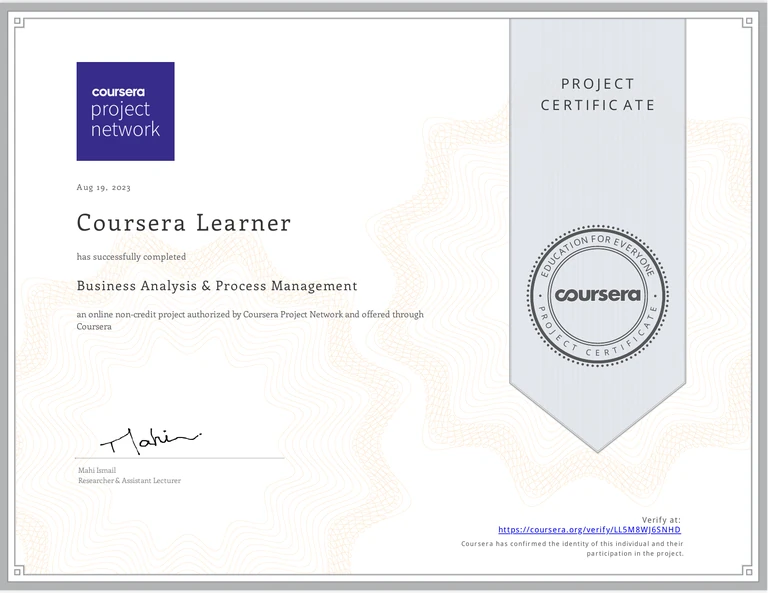
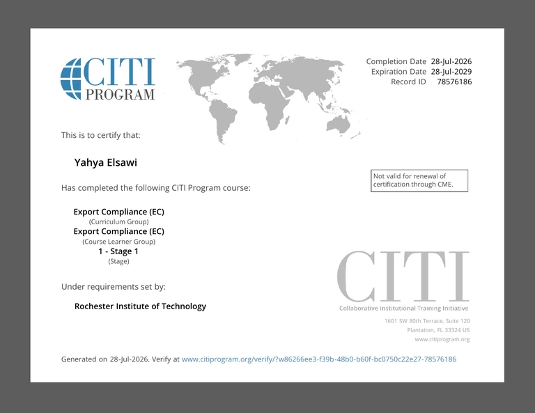
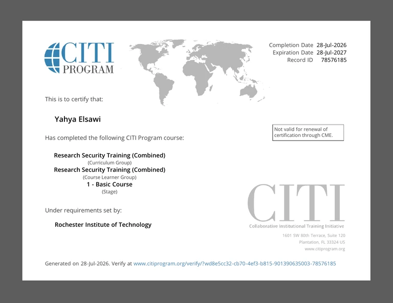
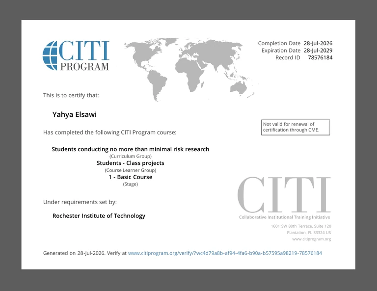

Current resume / Updated August 2026
Yahya El-Sawi.

Verified toolkit
Skills reflected in the work.
Product & Frontend
Immersive & XR
Networking & Cybersecurity
AI & Automation Tools
Testing & Platforms
Research & Compliance
Verified education & professional development
11 verified recordsCredentials by category.
Education
01 credentialProfessional development
05 credentials
StarLink Internship Program
Certificate of achievement

8-hour Odoo Technical Bootcamp
Recognition of completion

Software Design: Modeling with UML
Software design and UML certificate

My Marketing Experience Business Simulation
Certificate of completion

Business Analysis & Process Management
Project certificate
Research ethics & compliance
04 active certificates
Export Compliance (EC)
Stage 1

Research Security Training (Combined)
Basic Course
Social & Behavioral Research — Basic/Refresher
Basic Course

Students Conducting No More Than Minimal Risk Research
Students — Class Projects / Basic Course